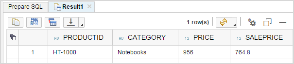
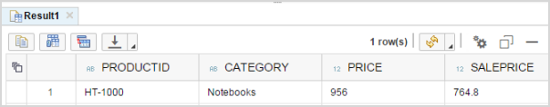

SQLScript procedures can make use of standard SQL statements to build a query that
requests data and returns a specified result set.
Prerequisites
- You have installed the SAP HANA Interactive Education
(SHINE) HCODEMOCONTENT delivery unit
(DU); this DU contains the tables and views that you want to consume with the
procedure you build in this tutorial.
- You have generated data to populate the tables and views provided by the
SHINE delivery unit and used in this tutorial. You can
generate the data with tools included in the SHINE delivery
unit.
Note You might have to adjust the paths in the code examples provided to suit the
package hierarchy in your SAP HANA repository, for example, to point
to the underlying content (demonstration tables and services) referenced in the
tutorial.
Context
The stored procedure you create in this tutorial uses standard SQL statements (for
example, SELECT statements) and some imperative logic constructs to determine the
sale price of a product based on the product category.
Procedure
-
Open the SAP HANA Web-based Development Workbench Editor
tool.
The Editor tool is available on the SAP HANA XS Web server at the following
URL:
http://<WebServerHost>:80<SAPHANAinstance>/sap/hana/ide/editor
-
Create the file that will contain the stored procedure.
-
In the package where you want to create the new stored procedure, create a new subpackage
called procedures, if not already available.
-
From the context menu of the procedures folder, choose .
-
Enter the required data:
-
File name: Enter the file name get_product_sales_price. The file
extension .hdbprocedure is added
automatically when the file is created.
-
Schema: Enter the name of an existing schema, for example,
MYSCHEMA.
-
Choose Create.
-
Define the new stored procedure.
This procedure uses standard SQL statements and some imperative logic
constructs to determine the sale price of a product based on the product
category.
-
In the get_product_sales_price.hdbprocedure file, use the following
code to define the details of the stored procedure:
Sample Code
PROCEDURE "MYSCHEMA"."demo.procedures::get_product_sales_price" (IN productid NVARCHAR(10), OUT product_sale_price SAP_HANA_DEMO."sap.hana.democontent.epm.data::EPM.Procedures.tt_product_sale_price")
LANGUAGE SQLSCRIPT
SQL SECURITY INVOKER
READS SQL DATA AS
BEGIN
/*****************************
Write your procedure logic
*****************************/
declare lv_category nvarchar(40) := null;
declare lv_discount decimal(15,2) := 0;
lt_product = select PRODUCTID, CATEGORY, PRICE
from "sap.hana.democontent.epm.data::EPM.MD.Products"
where PRODUCTID = :productid;
select CATEGORY into lv_category from :lt_product;
if :lv_category = 'Notebooks' then
lv_discount := .20;
elseif :lv_category = 'Handhelds' then
lv_discount := .25;
elseif :lv_category = 'Flat screens' then
lv_discount := .30;
elseif :lv_category like '%printers%' then
lv_discount := .30;
else
lv_discount := 0.00; -- No discount
end if;
product_sale_price =
select PRODUCTID, CATEGORY, PRICE,
cast((PRICE - (PRICE * :lv_discount)) as decimal(15,2))
as "SALEPRICE" from :lt_product;
END;
Remember
Remember to replace the schema name and fully qualified procedure
name with the ones you have used. In the example above, the
schema name is MYSCHEMA and the fully
qualified procedure name is
demo.procedures::get_product_sales_price.
-
Save the changes you have made to the new stored procedure.
-
Preview the data in the editor.
-
In the toolbar choose
 (Invoke Procedure with
UI).
(Invoke Procedure with
UI).
The SQL console opens.
-
On the Prepare SQL tab, enter a product ID, for
example, HT-1000.
-
Choose
 (Run).
(Run).
The SQL result is displayed.

-
Open the catalog and check that the new stored procedure was successfully created in the
correct location.
Example:
Catalog.MYSCHEMA.Procedures.demo.procedures::get_product_sales_price
-
Test the new stored procedure in the catalog.
-
In the context menu of the file (for example,
demo.procedures::get_product_sales_price),
choose Invoke Procedure.
The SQL console opens.
Sample Code
CALL "MYSCHEMA"."demo.procedures::get_product_sales_price"(PRODUCTID => ''/*<NVARCHAR(10)>*/,PRODUCT_SALE_PRICE => ?);
-
Enter a product ID, for example, HT-1000, and choose (Run).
Sample Code
CALL "MYSCHEMA"."demo.procedures::get_product_sales_price"
(PRODUCTID => 'HT-1000', PRODUCT_SALE_PRICE => ? );
The SQL result is displayed.

 New
New  HDB Procedure
HDB Procedure  .
.